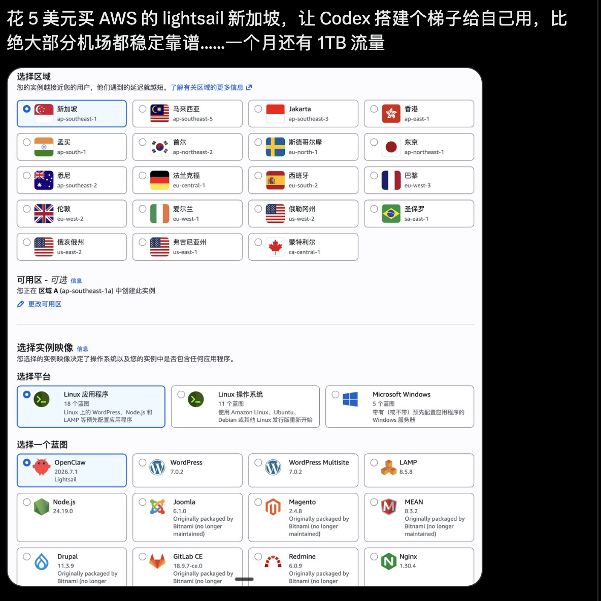
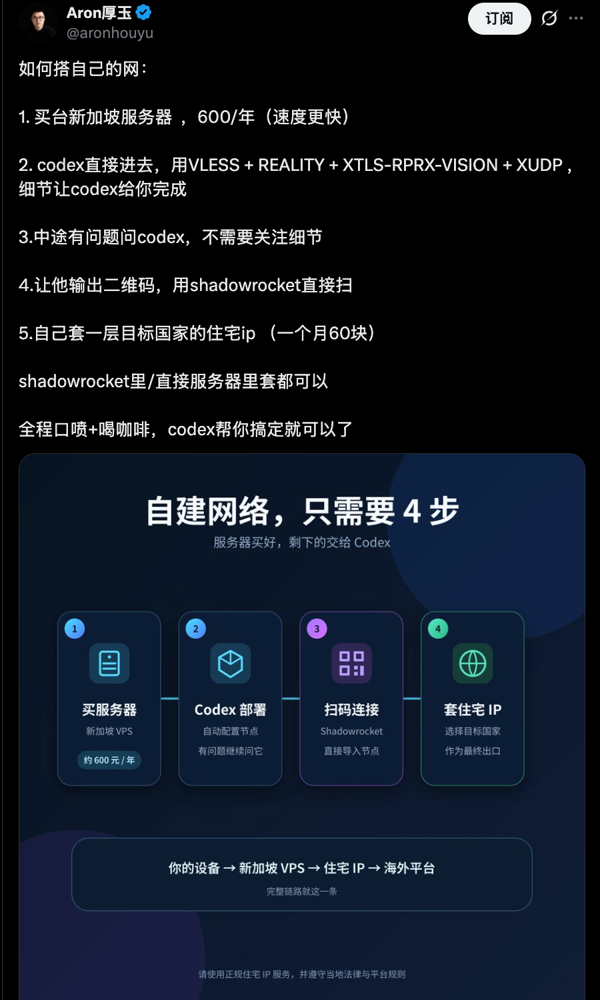

Tools · VPN · Self-Hosted Network
翻墙、VPN 与自建网络工具笔记
这是一篇基于截图整理的图文笔记，记录“购买海外服务器、让 Codex 协助部署、再接入客户端或出口 IP”的思路。具体实践需要遵守所在地区法律法规、云服务商条款和目标平台规则。
核心想法
截图里记录的是一种自建网络工具的思路：先买一台海外 VPS，再让 Codex 协助完成部署，最后通过客户端扫码或导入节点使用。如果还需要更接近目标国家的访问环境，可以再叠加目标国家的住宅 IP。
这个方案的吸引力在于成本低、链路可控、节点归自己管理。截图提到的示例是 AWS Lightsail 新加坡区域，低价实例每月自带较大的流量额度，也适合做轻量服务和个人工具实验。

自建网络的四步路径
- 购买服务器：选择一个距离自己较近、稳定性较好的海外 VPS 区域，例如新加坡。
- 部署服务：把服务器信息交给 Codex，让它协助完成所需服务的安装、配置和基础安全设置。
- 连接客户端：让服务输出二维码或连接信息，再用 Shadowrocket 等客户端导入。
- 叠加出口：如有需要，再套一层目标国家的住宅 IP，形成“本机设备 -> VPS -> 住宅 IP -> 海外平台”的访问路径。

截图中的操作要点
截图提到的建议是：买一台新加坡服务器，价格大约每年 600 元，速度通常会比很多低价机场更稳定；部署细节可以交给 Codex 处理；中途遇到问题继续问 Codex，不需要自己陷入每个技术细节。
另一个重点是客户端连接方式。服务部署好以后，可以输出二维码，用 Shadowrocket 扫码导入，也可以把连接信息直接复制到客户端或服务器配置里。
适合谁
这类方案适合愿意自己管理服务器、希望节点更可控、并且能承担基础维护成本的人。它不适合完全不想碰服务器、不想处理账单、域名、证书、端口、安全组和故障排查的人。
如果只是偶尔使用，现成服务可能更省心；如果你需要长期稳定、可控、可迁移的个人网络工具，自建 VPS 会更有学习价值。
注意：本文只是整理截图中的工具思路和信息架构，不提供具体协议参数、节点配置或规避平台风控的操作步骤。实际使用前应确认当地法律、云服务商服务条款以及相关平台规则。